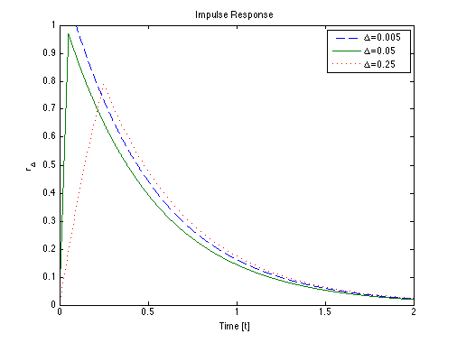

Contents
Impulse Response of LR lowpass
Copyright 2007 Telecommunications Lab
Ts=0.001; % Sampling Time t=[0: Ts: 2]; % Initializing Time Axis % L{dy(t)/dt+2y(t)=x(t)}={sY(s)+Y(s)=X(s)}=> Transfer function % (H(s)=Y(s)/X(s)) H=1/(s+2); %Transfer function h1=ilaplace(H); %inverse Laplace h=subs(h1); %%%%%%%%%%%%%%%%%%%%%%%%%%%%%%%%%%%%%%%%%%%%%%%%%%%%%%%%%%%%%%%%%%
Input Signal
Form Dirac pulse approximations
dirac1=dirac__(0.005,t);
dirac2=dirac__(0.05,t);
dirac3=dirac__(0.25,t);
%%%%%%%%%%%%%%%%%%%%%%%%%%%%%%%%%%%%%%%%%%%%%%%%%%%%%%%%%%%%%%%%%%
Impulse response computation
convoluting Transferfunction with the formed input signals
impulse1=Ts*conv(dirac1,h); impulse2=Ts*conv(dirac2,h); impulse3=Ts*conv(dirac3,h); t=[0: Ts: 4]; % New time axis after the convolution %%%%%%%%%%%%%%%%%%%%%%%%%%%%%%%%%%%%%%%%%%%%%%%%%%%%%%%%%%%%%%%%%%
Ploting
plot(t,impulse1,'--',t,impulse2,'-',t,impulse3,':','LineWidth',1.5); axis([0 2 0 1]) xlabel('Time [t]');ylabel('r_{\Delta}');title('Impulse Response') legend('\Delta=0.005','\Delta=0.05','\Delta=0.25') %%%%%%%%%%%%%%%%%%%%%%%%%%%%%%%%%%%%%%%%%%%%%%%%%%%%%%%%%%%%%%%%%%